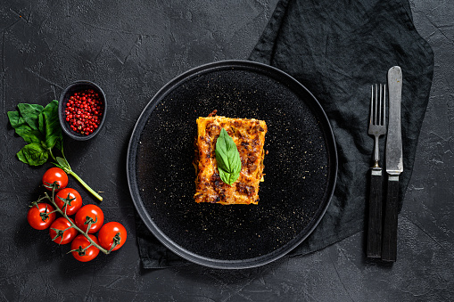

Lasagna

Description
>
Popular Italian dish consisting of stacked layers of wide, flat pasta sheets, with meat, cheese, and marinara sauce.
Ingredients
- Ground Beef
- Minced Garlic
- Seasoning
- Marinara Sauce
- Mozzarella cheese
- No boil lasagna sheets
Steps
- Preheat oven to 350°C
- Cook the ground beef with garlic and seasoning
- Mix cooked beef with the marinara sauce
- Make layers of lasagna sheets, meat, and Mozzarella cheese
- Cover with foil and bake for 1 hour